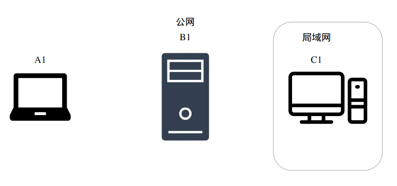

总结：
A：内网服务器，开321口，用户名zz
B：云主机，13.4.67.2781，开1231口，用户名root
C：笔记本
1、
A上
因为每次ssh远程转发，都需要输入B1的用户密码，因此要设置密钥连接，省去输入密码的过程。
在A上操作
ssh-copy-id -i keyfile root@113.4.67.278
# -i keyfile keyfile指定公钥文件上传到B1上，也可以不指定
# 也可不操作，就是ssh连B时要输入B的密码
ssh -fCNR 1231:127.0.0.1:321 -o ServerAliveInterval=60 root@113.4.67.278
可以不带f参数，不使用f参数命令不返回任何内容，并且这个终端不能关
（或者用autossh工具：autossh -M 5555 -NR 1231:127.0.0.1:321 -p 22 root@113.4.67.278需要先安装autossh）
2、
在B上
ssh -p 1321 zz@127.0.0.1
sudo echo 'GatewayPorts yes' >> /etc/ssh/sshd_config
sudo service ssh restart
# GatewayPorts yes确保外网也能访问这个1321这个监听端口，而不是只能被localhost访问
3、
测试连通：
在C上在powershell中
ssh -p 1321 root@113.4.67.278
发现可以连通A
4、
B执行
sudo vim /etc/ssh/ssh_config # 或 ~/.ssh/config
在文件里面设置：
TCPKeepAlive=yes
# Client每隔 60 秒发送一次请求给 Server，然后 Server响应，从而保持连接
ServerAliveInterval 60
# Client发出请求后，服务器端没有响应得次数达到3，就自动断开连接，正常情况下，Server 不会不响应
ServerAliveCountMax 3
实测好用，不断连了
5、
C上
- 安装这个插件
- 安装后，点+添加远程主机B

第一次连接可能需要配置，按格式填用户名（对方），端口、ip即可
6、
因为每次使用vscode连A时都要输入两次A的密码，输入晚了还连不上。因此最好将C的公钥上传到A。方法如下：
- 生成C的密钥：powershell 运行ssh-keygen。一直按回车就行。生成的私钥保存在 C:/用户名/.ssh/id_rsa , 公钥名称id_rsa.pub。
- 在远程服务器A vim /etc/ssh/sshd_config确保下面三个选项是打开的 RSAAuthentication yes PubkeyAuthentication yes AuthorizedKeysFile .ssh/authorized_keys
- 将id_rsa.pub内容写入 A的 ~/.ssh/authorized_keys里(如果没有.ssh文件夹和authorized_keys文件，可以手动创建)
内容如下：
SSH远程端口转发实战详解
问题
前段时间在外地没有在实验室，随身携带了一个笔记本电脑。但是笔记本性能不够，想用SSH远程连接实验室的电脑。问如何连接？现有以下设备
| 设备 | IP | 备注 | 系统 |
| 实验室电脑C1 | 192.168.0.24 | 内网，可访问外网。SSH登陆端口为321。 | Linux |
| 笔记本电脑A1 | 动态变化 | 无公网IP | Linux、win |
| 云端服务器B1 | 13.4.67.2781 | 有公网IP | Linux |
 图片加载失败！
目标：
访问实验室电脑C1的321端口。
解决办法：
- 如果局域网共用一个公网IP（此公网IP可以在外网访问），且可以操作实验室的路由器，可以在路由器上添加端口映射。这样可以通过直接访问公网IP的虚拟端口，访问到局域网内的电脑。但是很遗憾笔者实验室的公网IP被学校的防火墙拦住了，无法在外网直接访问。
- 借助各种内网穿透的软件，但是题主没有找到一个鲁棒可靠的软件。实在要推荐一个那就 ngrok
- SSH远程端口转发访问局域网电脑，此方法需要一个中转服务器（有公网IP）。
前面两种方法本文就不展开介绍了，主要介绍第三种方法。
SSH远程端口转发
所谓远程端口转发，就是将发送到远程端口的请求，转发到目标端口。这样就可以通过访问远程端口，来访问目标端口的服务。
通常，本地主机是没有独立的公网IP的，它与同一网络中的主机共享一个IP。没有公网IP，云主机是无法访问本地主机上的服务的。
通过远程转发，我们就可以通过访问云主机B1的XXX端口来访问实验室主机C1的321端口。
使用-R属性，就可以指定需要转发的端口，语法是这样的:
-R 远程网卡地址:远程端口:目标地址:目标端口
实现
在实验室主机C1上操作
ssh -fCNR port:localhost:321 root@113.4.67.278
# 远程网卡地址可省略，表示绑定了C1的所有网卡
# port : 自定义一个端口，如1321
# 321 : 实际想访问的本地端口
# root和ip地址根据实际情况改写
# -f : 表示SSH连接在后台运行
# -C : 表示压缩数据传输
# -N : 用于端口转发，表示建立的SSH只用于端口转发，不能执行远程命令
# -R : 指定远程端口转发
通过远程转发，我们可以直接通过SSH在云端服务器B1上登录C1。
ssh -p 1321 name@localhost
# name改写成C1的用户名
但是我们还不能在A1上直接登录C1，还要在B1电脑上操作：
sudo echo 'GatewayPorts yes' >> /etc/ssh/sshd_config
sudo service ssh restart
# GatewayPorts yes确保外网也能访问这个1321这个监听端口，而不是只能被localhost访问。
这样我们就可以直接在A电脑访问C电脑了：
ssh -p 1321 name@113.4.67.278
# name改写成C1的用户名
存在问题
- ssh会因为超时而关闭，因此不稳定
- 开关机之后通道就不存在了，因此还要设置开机自启
为了解决两个问题我采用了crontab。通过crontab 命令，我们可以在固定的间隔时间执行指定的系统指令或 shell script脚本。
C1密钥连接B1
因为每次ssh远程转发，都需要输入B1的用户密码，因此要设置密钥连接，省去输入密码的过程。
在C1上操作
ssh-copy-id -i keyfile nameB1@113.4.67.278
# -i keyfile keyfile指定公钥文件上传到B1上，也可以不指定
# nameB1 B1用户名
cron
在Linux系统中，计划任务一般是由 cron 承担，我们可以把 cron 设置为开机时自动启动。
/sbin/service cron start //启动服务
/sbin/service cron stop //关闭服务
/sbin/service cron restart //重启服务
/sbin/service cron reload //重新载入配置
cron可以让系统在指定的时间，去执行某个指定的工作，我们可以使用 crontab 指令来管理cron机制
crontab 参数
usage: crontab [-u user] file
crontab [ -u user ] [ -i ] { -e | -l | -r }
(default operation is replace, per 1003.2)
-u 指定用户，不指定用户就默认自身
-e (edit user's crontab) (使用预设的编辑器，开启crontab并编辑)
-l (list user's crontab) (列出crontab中的内容)
-r (delete user's crontab) (移除crontab)
-i (prompt before deleting user's crontab) (移除crontab，不过会再确认一下)
语法示例
分(0-59) 时(0-23) 日期(1-31) 月(1-12) 星期(0-7)(0和7都是周天)
*/5 * * * * 每五分钟执行
0-5 * * * * 每小时的前五分钟执行
0,1 * * * * 每小时的前两分钟执行
0 * * * * 0分时执行，即每小时执行一次
0 0 * * * 0时0分时执行，即每天执行一次
0 0 1 * * 1号0时0分时执行，即每月执行一次
* : 代表取值范围内的所有数字
/ : 代表“每”
- : 代表从某数字到某数字
, : 代表分开几个离散的数字
因此我们定时执行ssh远程转发，就可以确保连接的稳定性。
# 编辑crontab
crontab -e
# 添加命令
*/10 * * * * ssh -fCNR 1321:localhost:321 root@113.4.67.278
# 开机自启
systemctl enable --now cron
至此大功告成。
最后
SSH除了远程转发，还有逆向的本地转发。还有动态转发，动态转发可以做简易的VPN。
端口转发详解可参考文章2，3